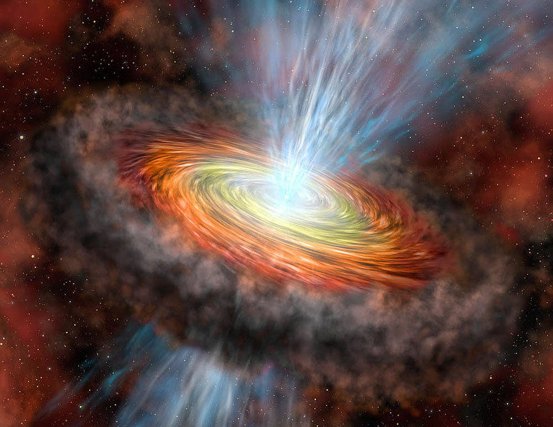
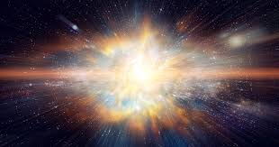

A nebula is a vast cloud of gas and dust in space, often spanning light-years across. It is the first stage in the life cycle of a star, where the gas and dust start to clump together due to gravity. This image captures the vibrant colors and intricate patterns of a nebula, showcasing swirling clouds illuminated by nearby stars. These stellar nurseries, like the Orion Nebula, can give birth to thousands of stars as dense regions collapse under their own weight, marking the beginning of a star’s journey.
2. Protostar

A protostar forms as the gases in the nebula contract and heat up. This stage can last for millions of years as the star slowly accumulates more mass. The image depicts a glowing protostar shrouded in a cocoon of dust and gas, emitting faint light as it begins to ignite. Surrounding material spirals inward, feeding the young star while jets of gas may shoot out from its poles. This turbulent phase, seen in regions like the Carina Nebula, sets the stage for nuclear fusion.
3. Main Sequence Star
Once hydrogen fusion begins, the star enters the main sequence phase of its life. This is the stage where stars, including our Sun, spend most of their life. The image shows a radiant main sequence star, steadily burning hydrogen in its core to produce energy that balances gravitational collapse. Its bright, stable glow illuminates nearby space, and stars in this phase can shine for billions of years, depending on their mass. Our Sun, a typical main sequence star, has been in this stage for about 4.6 billion years.
4. Red Giant
After hydrogen in the core is exhausted, the star expands into a red giant. This phase changes the star's structure and composition significantly. The image illustrates a massive red giant, its outer layers swollen to hundreds of times its original size, glowing with a deep reddish hue. As the core contracts, outer layers cool, giving the star its distinctive color. Stars like Betelgeuse in Orion are red giants, poised to shed their outer layers in the next phase of their evolution.
5. Supernova / Planetary Nebula

Depending on its mass, a star ends its life cycle in a supernova explosion or as a planetary nebula, leaving behind remnants that may evolve into white dwarfs, neutron stars, or black holes. This image captures the dramatic aftermath of a supernova, with glowing filaments of gas and dust expanding outward in a brilliant display. For massive stars, this cataclysmic explosion outshines entire galaxies briefly, scattering heavy elements into space. Less massive stars, like our Sun, may form delicate planetary nebulae, such as the Ring Nebula, before fading into white dwarfs.
Recent News about the Universe
In October 2023, astronomers detected an unusual cosmic event that could change our understanding of dark matter. Scientists observed an object emitting high-energy particles, suggesting it may have originated from beyond our galaxy. This discovery, made using advanced telescopes, highlights the ongoing mysteries of the cosmos and the dynamic processes shaping our universe.